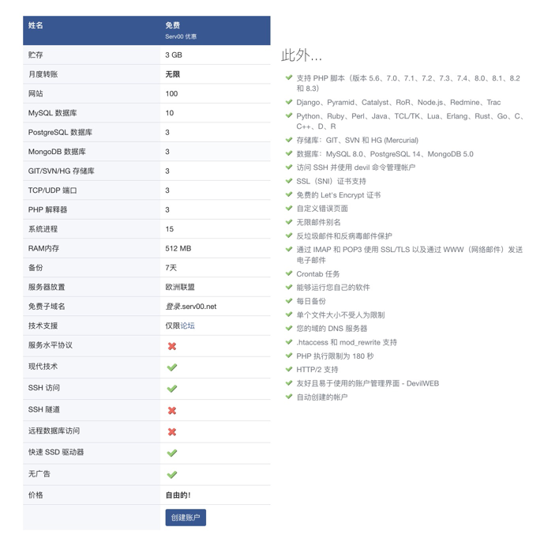
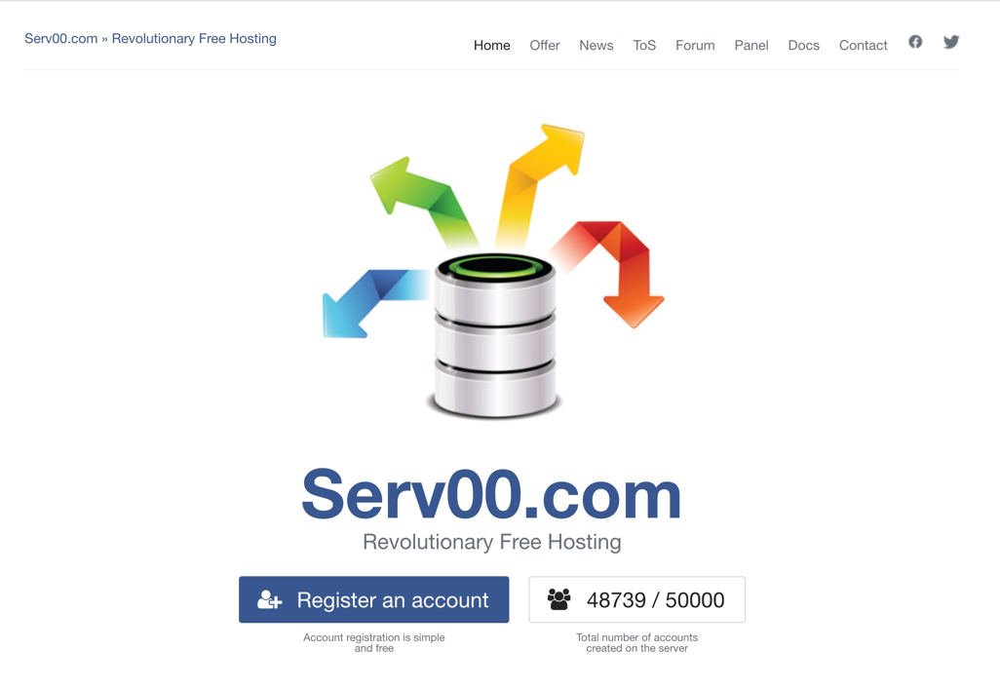
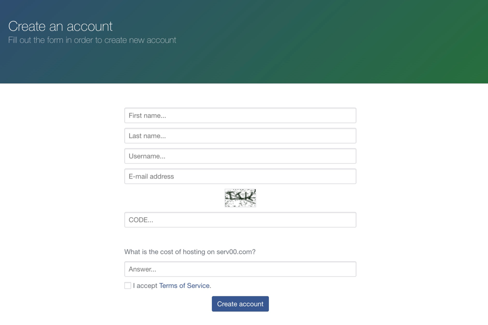
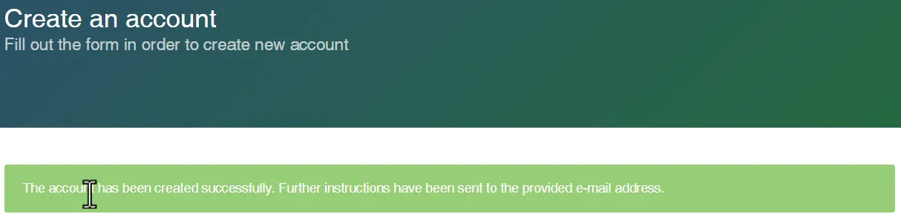
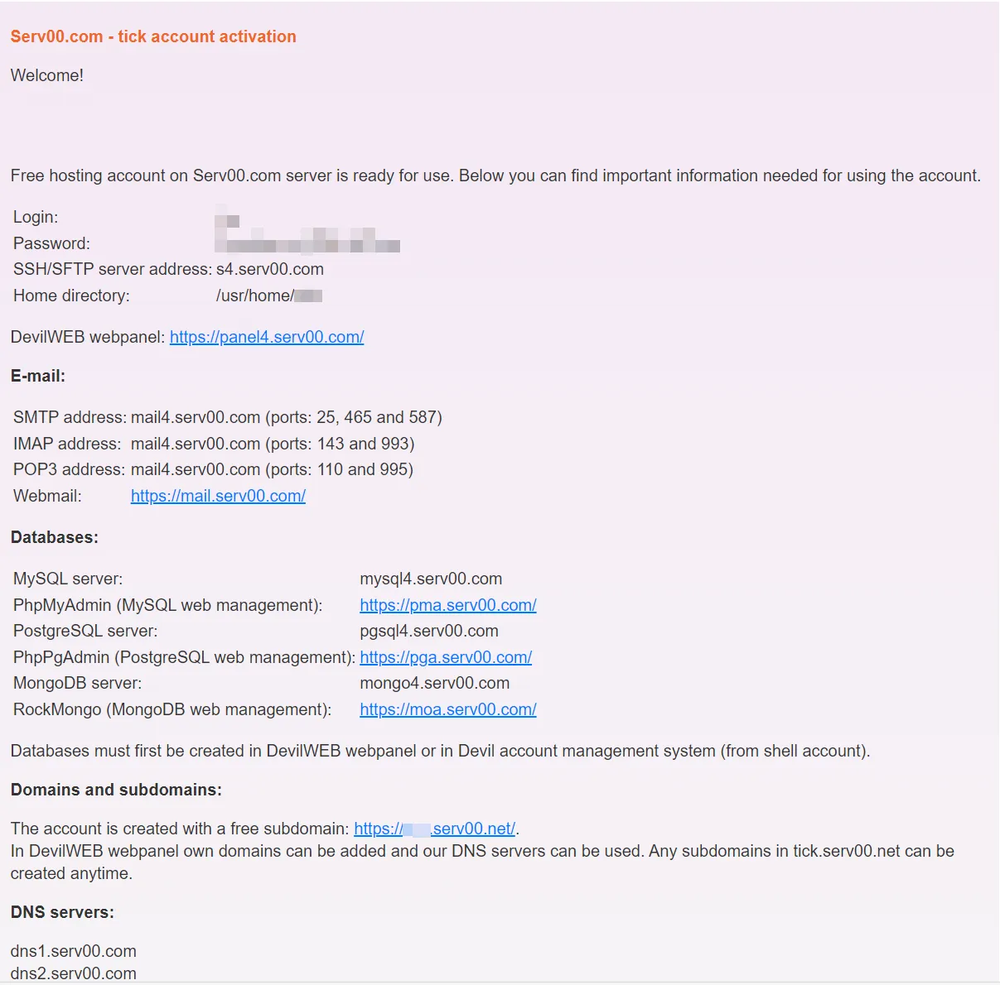

🌟 免费虚拟主机 - Serv00
- Serv00 是一家提供免费虚拟主机的厂商。它的免费套餐包含:
- 3GB 存储空间
- 512MB 内存
- 不限流量
- 支持PHP、MySQL等网站开发语言和数据库
- 提供免费的二级域名
- 可自定义开放端口
- 支持SSH访问
- 要求是每3个月需登录一次控制面板或SSH,避免账号被回收
访问官网➡️: https://www.serv00.com/ 
一、注册serv00账户【⚠️名额有限，快来注册吧！】
 点击「Register an account」进入注册页面,注册之前需要注意三点
- 邮箱必须是真实邮箱，需要激活验证
- 用户名(Username)自己设置英文就可以，同时也代表域名比如
yixiu,域名就是yixiu.serv00.com - 答案(Answer)不要空着，可填写
free 输好之后点击「Create account」,如果用户名被占用了，换一个就行，如果没有被占用就会给你输入的邮箱发送消息。如果页面上方出现以下绿色提示信息，就代表账户注册成功了，去检查邮箱就可以  Serv00欢迎邮件包括所有的重要信息，包括后台管理面板和ssh登录的用户名密码，以及ssh主机名等，邮件千万记得保存，或者复制下来保存都可以。  Serv00后台面板为DevilWeb，用起来还是很方便的，登录的账户密码就是邮件里面的Login和Password，这个账号同样适用其他服务，比如ssh、mysql等。如果没有安装第三方的ssh客户端可以使用windows自带的openssh，mac的终端来登录
ssh xxxx@sx.serv00.com
#将 xxxx 换成自己的用户名，sx为s1-s4，依照欢迎邮件中的主机名
#命令行在输入密码的时候是看不到的，输完之后直接点回车就可以
⚠️到目前位置serv00账号已经注册好了
二、ClouDNS域名托管到serv00
- 打开ClouDNS官网和DevilWEB 网络面板（在邮件里面找面板的链接，用账号密码登录）
- 删除ClouDNS中域名所有的DNS记录
- 托管域名到serv00
- 域名会有双向解析的问题，把托管到serv00之后自动生成的DNS记录全部添加到ClouDNS中
- 后续如果有新的耳机域名解析也需要添加到ClouDNS
三、利用FreeSSL生成免费证书
- 打开FreeSSL官网(有账号登录，没账号注册，非常简单)
- 解析的时候注意serv00和ClouDNS都需要解析
四、🔗搭建vless节点
1，配置【开启权限】
- 第一步需要做的就是开启可以运行自己应用的权限。Additional services -> Run your own applications -> Enabled 如果不开启这一项，自己的用户目录下的所有文件都无法添加可执行权限。
2，安装PM2
PM2 是一款非常优秀的node.js进程管理工具。可以通过SSH用下面的指令一键安装。
bash <(curl -s https://raw.githubusercontent.com/k0baya/alist_repl/main/serv00/install-pm2.sh)
使用pm2，请直接用路径调用：~/.npm-global/bin/pm2，例如~/.npm-global/bin/pm2 list 就可以看到自己添加的应用。
「 另外，在`SSH`中通过下面的指令就可以开启页面监控功能！不需要可以不开 」
~/.npm-global/bin/pm2 monitor
如果没有账号可以按照提示创建就可以，然后会给出登录页面的地址。 https://app.pm2.io/#/bucket/65f3be6efe520b3f5503d9aa 用浏览器登录就可以看到了，非常的方便。
3，安装Vless
Vless是一个代理节点应用，可以通过SSH用下面的指令一键安装。
进入项目操作目录,以下命令行中<Your-domain>换成你的域名
cd ~/domains/<Your-domain>
克隆serv00-vless项目到
git clone https://github.com/qwer-search/serv00-vless && mv -f serv00-vless vless && cd vless && rm -f README.md
在serv00的管理页面上开启一个端口，Port reservation -> Add port添加一个TCP的端口号。再在File Manager 里面找到Vless的文件下的app.js文件，修改里面的端口号为刚刚添加的端口号。类似下面修改为了12345
const port = process.env.PORT || 12345;
安装依赖
npm install
安装完毕后，使用PM2启动并守护vless进程：
~/.npm-global/bin/pm2 start app.js --name vless
接着去你的代理客户端软件中手动添加vless配置即可：
| Key | Value |
|---|---|
| 地址 | Panel 中 WWW Websites 选项卡里的你的 Domain name |
| 端口 | 你放行的端口 |
| 用户 ID | 37a0bd7c-8b9f-4693-8916-bd1e2da0a817 |
| 传输协议 | ws |
| 伪装域名 | 同地址 |
| ws path | / |
也可以复制以下vless节点信息，修改<域名地址>为Panel 中 WWW Websites 选项卡里的你的 Domain name，<端口>为你放行的端口即可
vless://37a0bd7c-8b9f-4693-8916-bd1e2da0a817@<域名地址>:<端口>?flow=&security=none&encryption=none&type=ws&host=<域名地址>&path=/&sni=&fp=&pbk=&sid=#%E4%B8%80%E4%BC%91vless%EF%BC%8CTG%E7%BE%A4%EF%BC%9Ahttps://t.me/yxjsjl
上表没有给出的可以不填。
我用的客户端是v2rayU，按照这个配置就行。目前测试下来连接不是很稳定，延迟忽高忽低，有300ms左右。
4，自动化
听说serv00会不定时重启机器，所以我们把PM2添加开机自启。而且serv00每三个月内必须要有一次登录面板或者SSH连接，不然会删号，也可以通过一个脚本解决问题，接下来我会详细说明。
自动续期
新建opt目录,并进入目录
mkdir ~/opt
新建 auto-renew.sh 脚本：
cat > auto-renew.sh << EOF
#!/bin/bash
while true; do
sshpass -p '密码' ssh -o StrictHostKeyChecking=no -o UserKnownHostsFile=/dev/null -tt 用户名@地址 "exit" &
sleep 259200 #30天为259200秒
done
EOF
另外记得把其中的密码、用户名、ssh的地址修改为你自己的。
给 auto-renew.sh添加可执行权限：
chmod +x auto-renew.sh
使用PM2启动：
~/.npm-global/bin/pm2 start ./auto-renew.sh
这样就会每隔一个月自动执行一次SSH连接，自己SSH自己进行续期。
自动启动
在serv00的管理页面上找到Cron jobs选项卡，使用Add cron job功能添加任务，Specify time选择After reboot，即为重启后运行。Form type选择Advanced，Command写：
/home/你的用户名/.npm-global/bin/pm2 resurrect
添加完之后，在SSH窗口保存PM2的当前任务列表快照：
~/.npm-global/bin/pm2 save
这样每次serv00不定时重启任务时，都能自动调用PM2读取保存的任务列表快照，恢复任务列表。如果在保存了任务列表快照后又改变了任务PM2的任务列表，需要重新执行pm2 save以更新任务列表。


...